| 안건 | 내용 | 시간 | |
|---|---|---|---|
| 1 | 결정 반영 확인 | 바뀐 홈페이지·앱을 휴대폰으로 함께 보기 (첫 화면 영상, 한 문장, 등록 교인 가입, 기도 공간) | 15분 |
| 2 | 관리자 화면 미리보기 | PC·휴대폰 관리 메뉴 · 설교 영상·쇼츠 만들기 · AI 도우미 (3쪽) 권한은 다 만든 뒤에 | 15분 |
| 3 | 라잇나우미디어 브리핑 | 목사님 브리핑 → 우리 앱에 넣는 3가지 안(4·5쪽) → 방식 정하기 | 15분 |
| 4 | 주보 → 홈페이지·앱 연결 | 주보 만들기로 이번 주 주보 입력 → 「보내기」 한 번에 앱 주보·광고·성경읽기 진도까지 (간사님 실습) | 10분 |
| 5 | 사진첩 · 첫 화면 영상 | 한 달 1번 사진 고르는 방법 · 성도 얼굴이 나오는 사진·영상 공개 기준 | 5분 |
| 6 | 운영 준비 | 교인 로그인·알림을 위한 서버(무료로 시작) · 도메인(1년 약 2만 원) · 교회 계정으로 옮기기 · 개인정보 동의 문구 | 10분 |
| 7 | 오픈 계획 | 목자 시범 사용(2주) → 전체 오픈 · 성도 설치 도우미 날 · 광고 시간·주보 QR 안내 · 문자 공지 함께 보내는 기간 | 15분 |
| 8 | 준비물 · 다음 일정 | 교회에서 준비할 자료, 3차 미팅 날짜 | 5분 |
| 결정 | 반영 |
|---|---|
| H1 · H2 첫 화면 | 「죄에서 멀어져 자유케 되는 교회」 + 예그린 영상(2026 전교인수련회 예배 장면 17초), 필요한 정보는 바로 아래 |
| H3 · H4 · H5 | 교회 소식·광고·주보는 앱으로 · 최근 설교 4편 · 사진첩(한 달 1번) · 선교는 나라 이름만 |
| A1 등록 교인만 | 앱을 열면 가입부터, 정하람 간사님 승인 후 열림 |
| A2 앱 기능 | 말씀 은혜 나눔 · 선교 소식 · 감사 챌린지(기간에만) · 성경읽기 함께 읽은 수(숫자만) · 나만의 기도 공간(휴대폰에만, 아무도 못 봄) |
| 새로 만든 것 | 관리자 화면(휴대폰·PC) · 설교 영상·쇼츠 만들기 · AI 도우미 · 목장방 「이번 주 목장 영상」(라잇나우미디어 링크) |
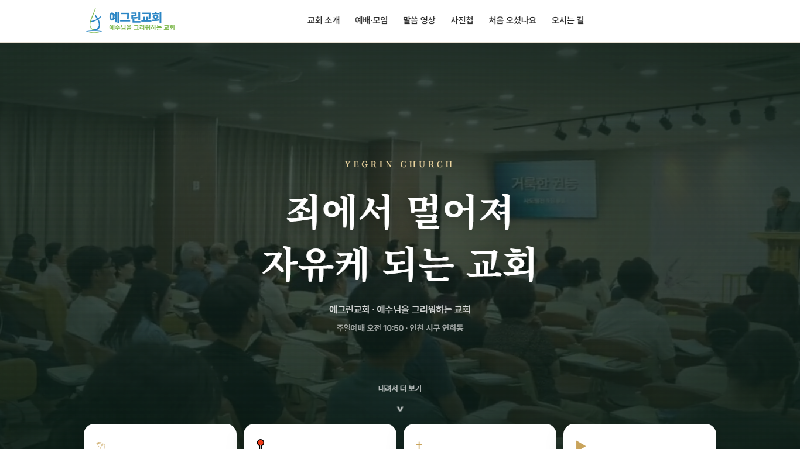
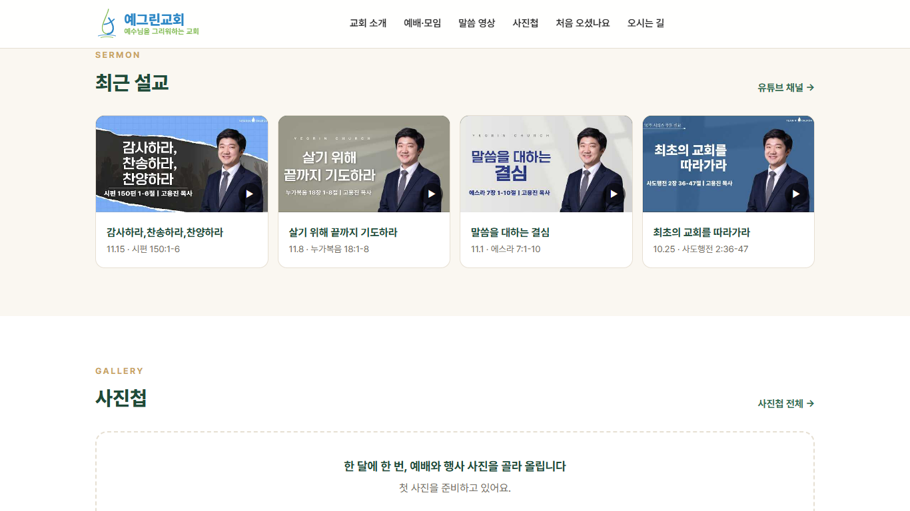
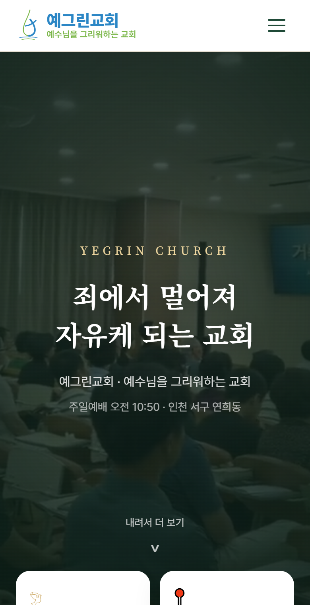
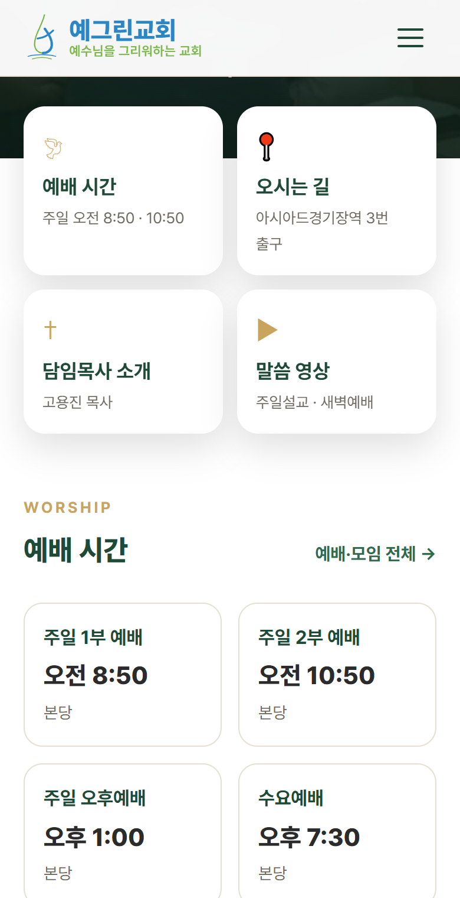
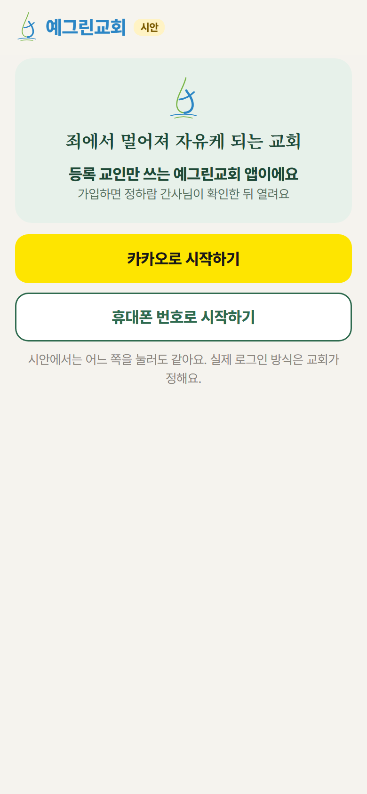
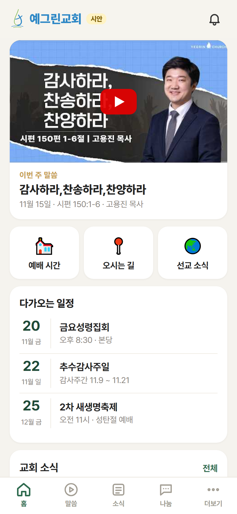
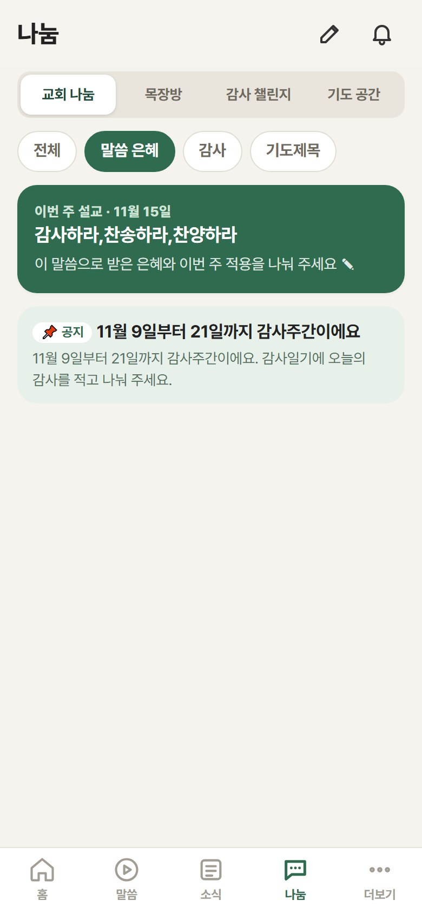
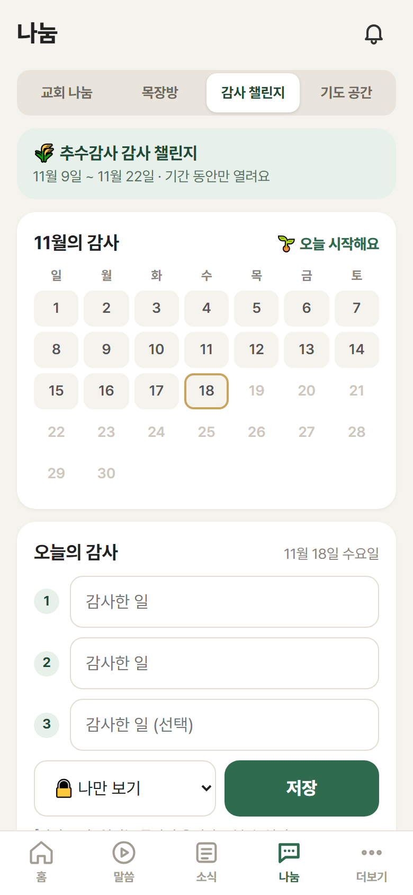
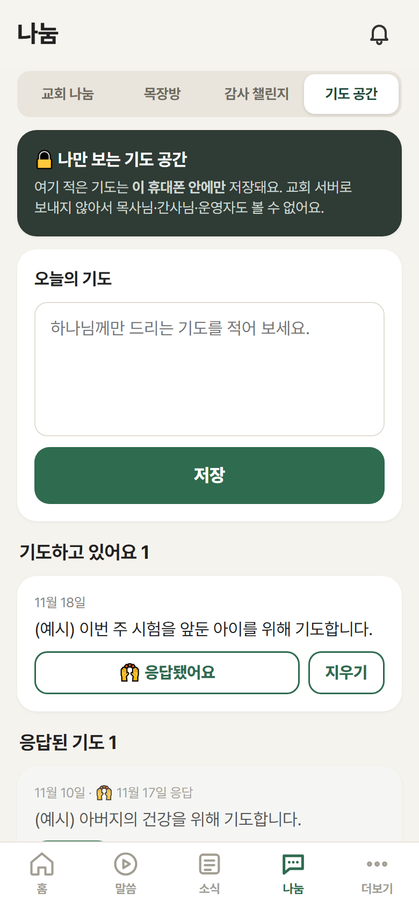
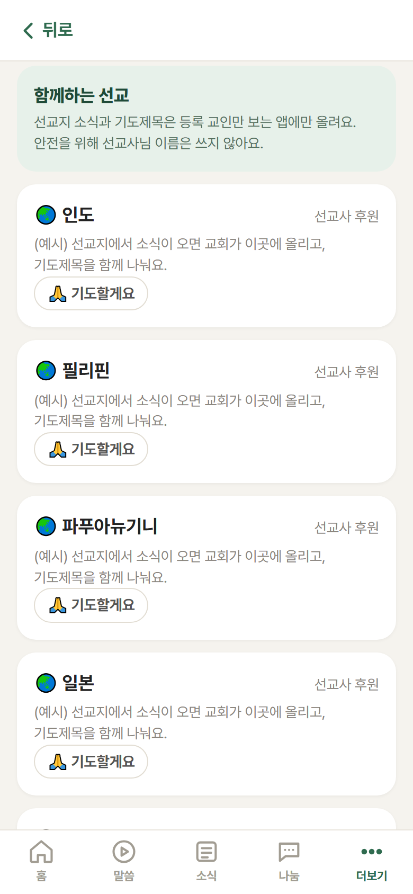
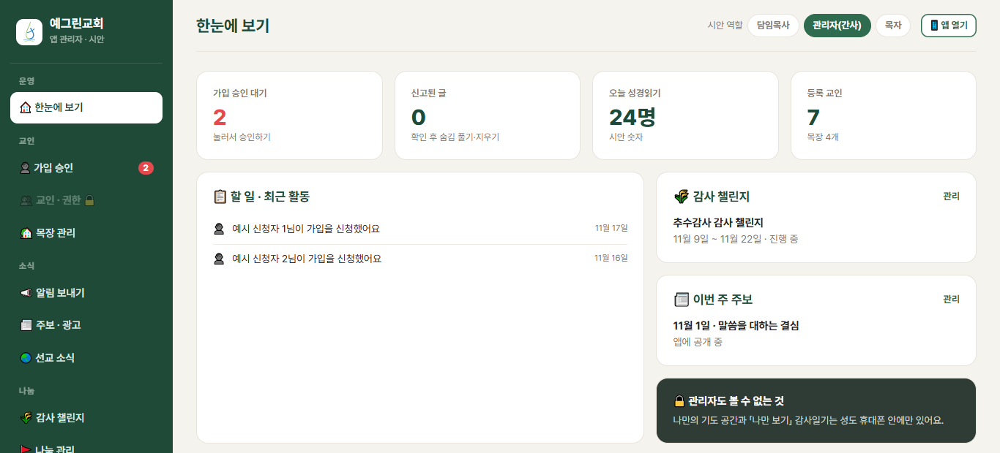
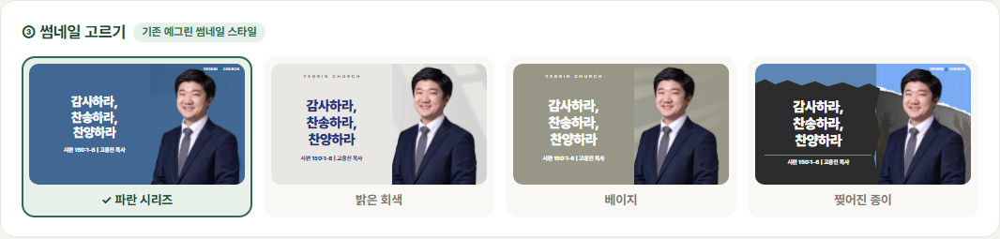
썸네일은 지금 예그린 유튜브 썸네일 4가지 스타일(파란 시리즈 · 밝은 회색 · 베이지 · 찢어진 종이) 중에서 골라요.
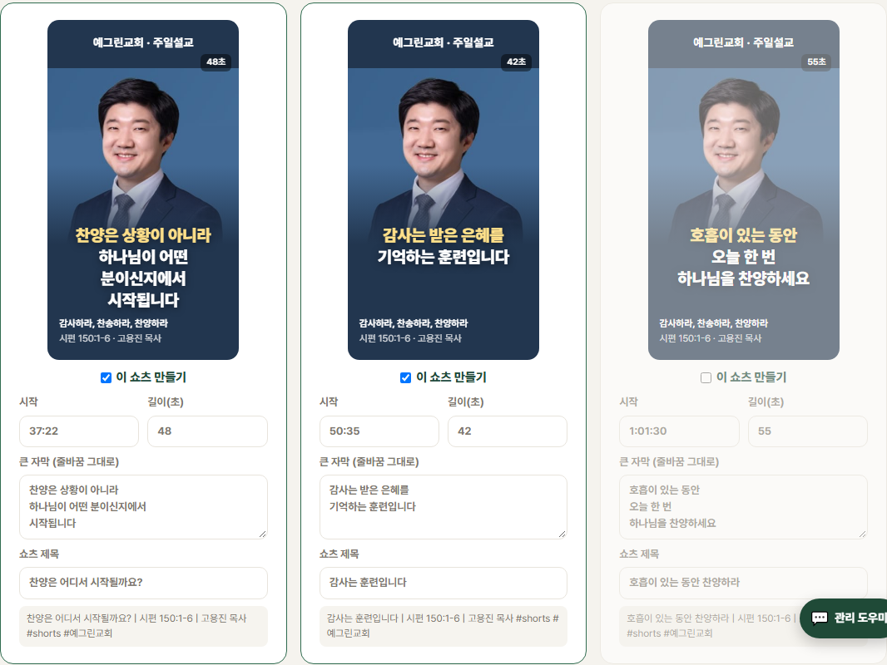
마음에 남는 문장을 큰 자막으로 · 다음 날부터 하루 1개 저녁 7시 예약 · 설명란에 「전체 설교 보기」 링크
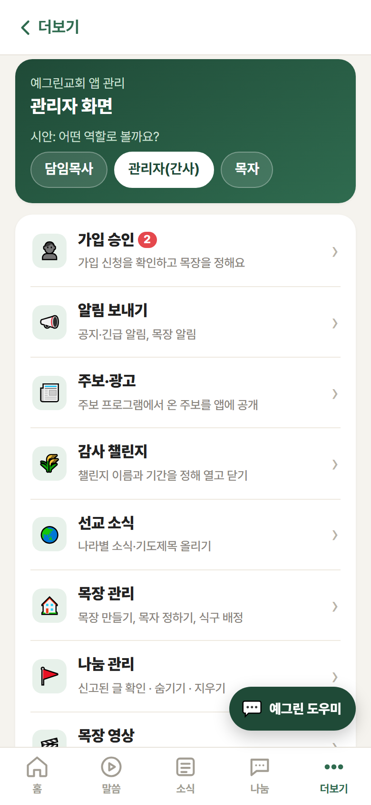
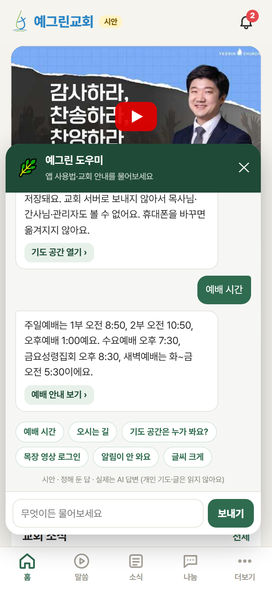
왼쪽: 휴대폰 관리자 · 오른쪽: 성도용 예그린 도우미
※ 지금은 시안이라 실제로 자르거나 올리지 않아요. 진행하면 교회 PC에 작은 프로그램을 깔아 처리하고, 유튜브 업로드 권한은 목사님·간사님이 한 번 허락해요.
라잇나우는 교회 이름으로 꾸민 영상 서재 페이지를 줘요. 그 페이지를 따로 쓰지 않고, 예그린 홈페이지·앱이 대문이 되고 라잇나우 영상을 그 안에 담는 3가지 방법이에요. 세 안 모두 라잇나우 구독이 필요하고, 영상은 처음 한 번 라잇나우에 가입한 뒤 라잇나우 앱에서 재생돼요.
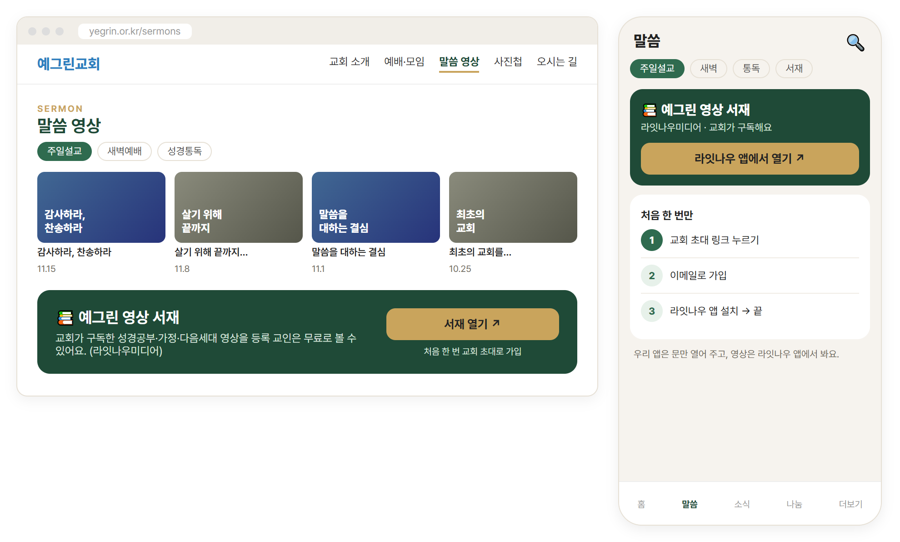
홈페이지 「말씀 영상」 아래 예그린 영상 서재 배너 → 라잇나우 교회 서재로 이동
앱 말씀 탭에 「서재」 → 처음 한 번 가입 안내 3단계 → 라잇나우 앱 열기
👍 1주면 완성 · 간사님이 따로 할 일 없음
🤔 무엇을 볼지는 성도가 라잇나우에서 직접 찾아야 해요
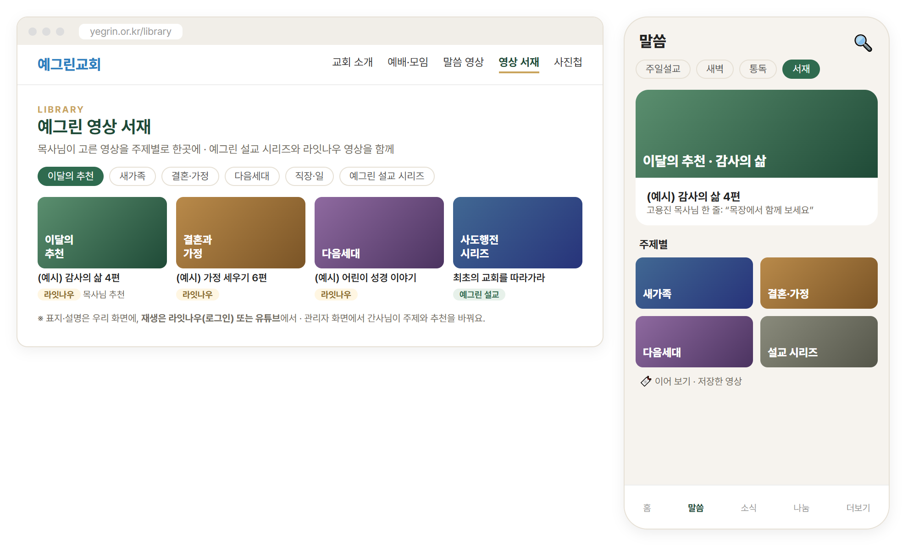
홈페이지 메뉴에 「영상 서재」: 목사님이 고른 라잇나우 시리즈 + 예그린 설교 시리즈를 주제별로 (새가족·결혼·가정·다음세대·직장)
앱 말씀 탭 「서재」: 이달의 추천, 목사님 한 줄, 이어 보기·저장
👍 설교와 라잇나우가 한곳에 · 성도가 고르기 쉬워요
🤔 관리자 화면에서 한 달 1번 추천을 바꿔 줘야 해요
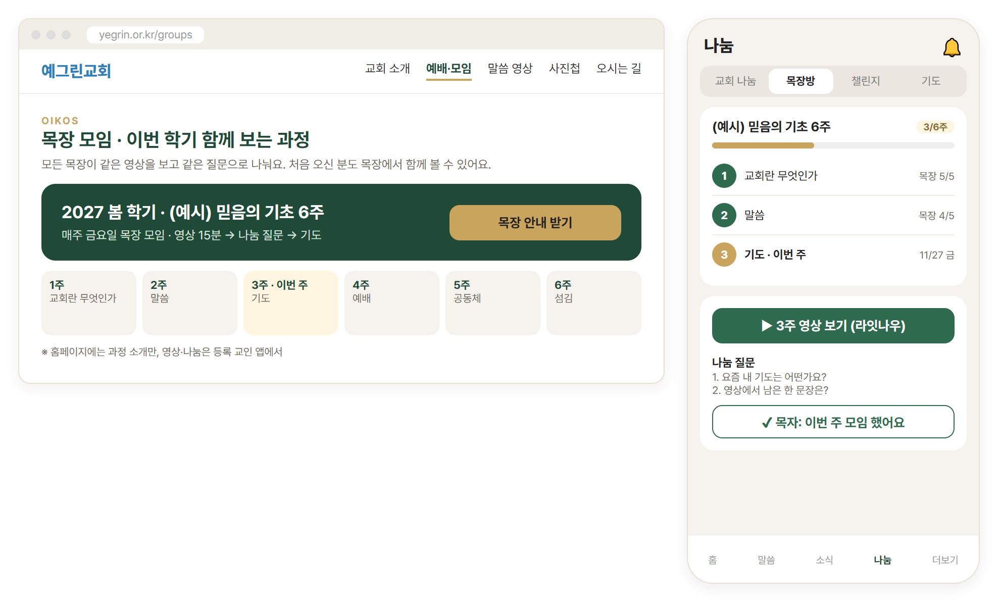
홈페이지 「예배·모임」에 이번 학기 목장 과정 소개 (예: 6주 과정, 주차별 주제)
앱 목장방에 주차표: 이번 주 영상 → 나눔 질문 → 목자가 「모임 했어요」 체크
관리자 목장별 진행 현황을 한눈에 (몇 주차까지 했는지)
👍 모든 목장이 같은 영상·같은 질문 · 지금 시안의 「이번 주 목장 영상」을 넓힌 것
🤔 학기마다 과정을 고르고 나눔 질문을 준비해야 해요
| 1안 바로가기형 | 2안 예그린 영상 서재 | 3안 목장 과정형 | |
|---|---|---|---|
| 만드는 기간 | 약 1주 | 약 2~3주 | 약 2~3주 |
| 교회에서 할 일 | 없음 | 한 달 1번 추천 고르기 | 학기마다 과정·질문 정하기 |
| 성도가 쓰기 | 라잇나우에서 직접 찾기 | 추천을 보고 바로 고르기 | 목장에서 함께 보기 |
| 목장 연결 | — | 추천에 「목장에서 함께」 표시 | 주차·질문·목자 체크 |
| 설교 영상과 | 따로 | 한곳에 (주제별) | 따로 |
※ 화면 속 시리즈 이름은 예시예요. 실제로는 목사님이 라잇나우에서 고르신 영상으로 바뀌어요.
※ 관리자 권한(누가 어떤 메뉴를 쓸지)과 관리자가 볼 수 있는 교인 정보는 홈페이지·앱을 다 만든 뒤에 정해요.